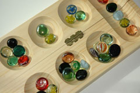
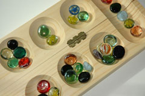

|

|

|

|
 |
GamesCrafters:
Keith Ho and Spencer Ray
References:
Pentagrams. Pentagames. New York: Fireside, 1990.
Pritchard, David. Brain Games. New York: Penguin Books, 1982.
History
Mancala does not refer to any specific game, but instead is the name for a large family of board games played around the world. The Mancala family of games share the basic gameplay of sowing counters into holes or cups. The counters which are also known as seeds are redistributed with the goal of taking prisoners. Historians believe Mancala may be the oldest game in the world. It has long been played in Africa for thousands of years. Much of the original rules have remained unchanged and even today Mancala is popular across most of Africa, the Middle East and Asia. Although there are at least two hundred different regional variations, West African Wari is perhaps the best known.
Game Play
The Pieces:
Stones, seeds, shells or any similar object that is easy to handle and
distribute into the cups.
Rules:
To move: The first player starts by scooping up his stones from one of his small bowls.
He drops one stone into the bowl to the right of his bowl and continues up the board counterclockwise
placing stones into the right bowl.
To win: To end with more pieces in your base than your opponent.
Players place the board lengthwise between them. The board starts out with a given number of pieces in each of the smaller bins. In Wari, the board has two rows of six holes. Four counters or seeds are distributed into 1 of the 12 small holes. On each turn a player selects one of the bins on their side and takes out all of the pieces (stones) in it, and moving along counterclockwise, drops one piece in each bin they cross. In some versions of the games, the seeds in which the player can select from is limited to their side of the board. The second player does the same except he goes in an anti-clockwise motion.
Sowing If the turn ends after dropping the last seed into a bin, then the game is considered to be a single lap game. In a multiple lap game, if the cup in which the last seed is placed contains seeds, then the contents of the cup are picked up and redistributed. The players turn ends when the last seed falls into an empty hole. The Indian style laps, which are called pussa-kanawa, are essentially multiple lap games. Instead of scooping up the contents of the last hole, however, the player uses the contents of the next hole to continue with the lap. The lap will end when the last seed sown ends when the seed sown ends up next to a empty hole. In Wari, if a hole contains 12 or more seeds, the sowing will lap around the board more than once. The hole emptied is left empty throughout the rest of the game.
Capturing A player may capture a seed from the board on the last lap. There are several variations on how to capture, including what is done with the counters that are captured. In the Wari version, if the last seed sown lands in a cup with exactly one or two of your opponent's pieces in it, then the stones become captured prisoners. The stones are removed from the board and placed in the big storehouse located at either end of the board. If the preceding cup has two or three stones, then the pieces are captured as well. This capture continues until the player reaches a position where there are not two or three stones located in the cup. An alternative version to capturing includes removing the seeds in any adjacent holes with two or three pieces rather then the preceding cup.
Strategies:
If you leave one of your cups with just two stones in it, then it is susceptible to attack by the opposition.
In order to defend against this, the player should do one of three things: empty the cup, add a piece to the
vulnerable cup by emptying another cup, or add a stone to the opponent's cup that is endangering your cup.
A player should also try not to have empty cups, which although is less vulnerable to attack then
having two stones is still an easy target. A piece may be dropped into the empty cup so that on the next round
it can be taken prisoner.
Variants:
12 Stones: If a player empties a cup that has 12 or more counters, leave the cup empty so that the 12th stone is
placed in the cup containing the first stone.
One stone left: Leave at least one stone on the opponent's side of the board. The game continues until the player
is unable to do so.
Pictures:
|
|
|
|
|
|
 |
References:
Pentagrams. Pentagames. New York: Fireside, 1990.
Pritchard, David. Brain Games. New York: Penguin Books, 1982.